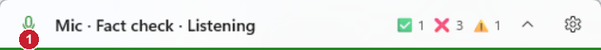
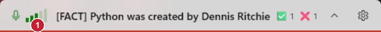

Microphone level meter
Only the pill changed, so only the pill is shown. "Before" is cut from the picture you sent; "after" is a Debug build with a sample level of an ordinary speaking voice.
Before

The only sign of your voice was a faint green halo behind the microphone icon, too subtle to notice.
After

Five bars next to the microphone light up from left to right with your voice and update ten times a second. Silence and room noise light none, normal speech lights three or four, and five means loud. All bars stay dim while muted. The halo is removed.